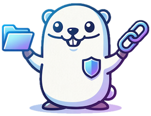

Go Web File Manager
简单 · 轻量 · 易用 — 一键让本地文件夹秒变安全私有网盘
如果你遇到过以下场景，goWFM 就是为你准备的
服务器、NAS、树莓派上有大量文件，想在任何设备上随时安全访问，不再局限于本地终端。
文件已有清晰的目录结构，不想迁移到第三方网盘，也不想被迫改变文件组织方式。
Nginx autoindex、Python http.server 虽然能用，但没有用户认证、没有权限控制，裸奔在公网太危险。
需要把某个文件分享给别人下载，但不想给他你所有文件的访问权限，只需一个临时链接。
看看 goWFM 与其他方案有何不同
| 功能维度 | 传统 HTTP Dir Listing | 常见网盘 | goWFM |
|---|---|---|---|
| 存储结构 | 原始目录 | 私有格式/对象存储 | 保留原始目录结构 |
| 用户认证 | 无 | 有 | 内置用户系统 |
| 权限控制 | 无 | 基础 | 细粒度多维权限 |
| 文件分享链接 | 无 | 有 | 有时效分享链接 |
| 部署复杂度 | 简单 | 复杂(数据库/存储) | 单文件，零依赖 |
| 资源占用 | 低 | 高 | 极低(Go + SQLite) |
| 操作审计 | 无 | 部分 | 完整操作日志 |
| 文件所有权 | 无 | 有限 | 所有权追踪与管理 |
| 移动端适配 | 差 | 好 | 响应式现代 UI |
精心打造的每一个功能，都为简化你的文件管理体验
内置 admin 超级管理员，细粒度权限控制：浏览、下载、上传、分享、日志查看，按需分配。
文件在磁盘上什么样，Web 上看到就什么样。不迁移、不拷贝，直接管理你的现有文件。
生成有时效性的公开下载链接，无需登录即可访问。安全分享，到期自动失效。
谁在什么时候做了什么？所有文件操作有迹可循，满足团队合规与安全审计需求。
文件和文件夹自动记录创建者，admin 可随时变更所有者，权责清晰可追溯。
基于 Vue 3 + TypeScript 构建的现代 Web UI，完美适配桌面、平板和手机等各种设备。
Go + SQLite 纯编译，单一二进制文件，无需安装数据库、无需 Docker，最低资源消耗。
下载 → 运行 → 浏览器打开 → 完成。零配置启动，三步搞定，没有比这更简单的了。
无论是个人还是团队，goWFM 都能帮到你
为团队搭建一个安全的文件共享中心，按角色分配权限，随时随地协作。
生成一个有时效的下载链接，发给客户即可下载，无需注册，无大小限制。
在家里的 NAS 或树莓派上运行 goWFM，出门在外也能随时访问你的文件。
创建一个上传入口，让多人同时上传文件到指定目录，汇总材料轻松高效。
无需复杂配置，几秒钟即可启动你的私有网盘
从 GitHub 下载对应平台的二进制文件
github.com/m00nfly/goWFM/releases
赋予执行权限后直接运行程序
chmod +x gowfm && ./gowfm
打开浏览器访问，完成初始化设置，开始使用
http://your-ip:8080